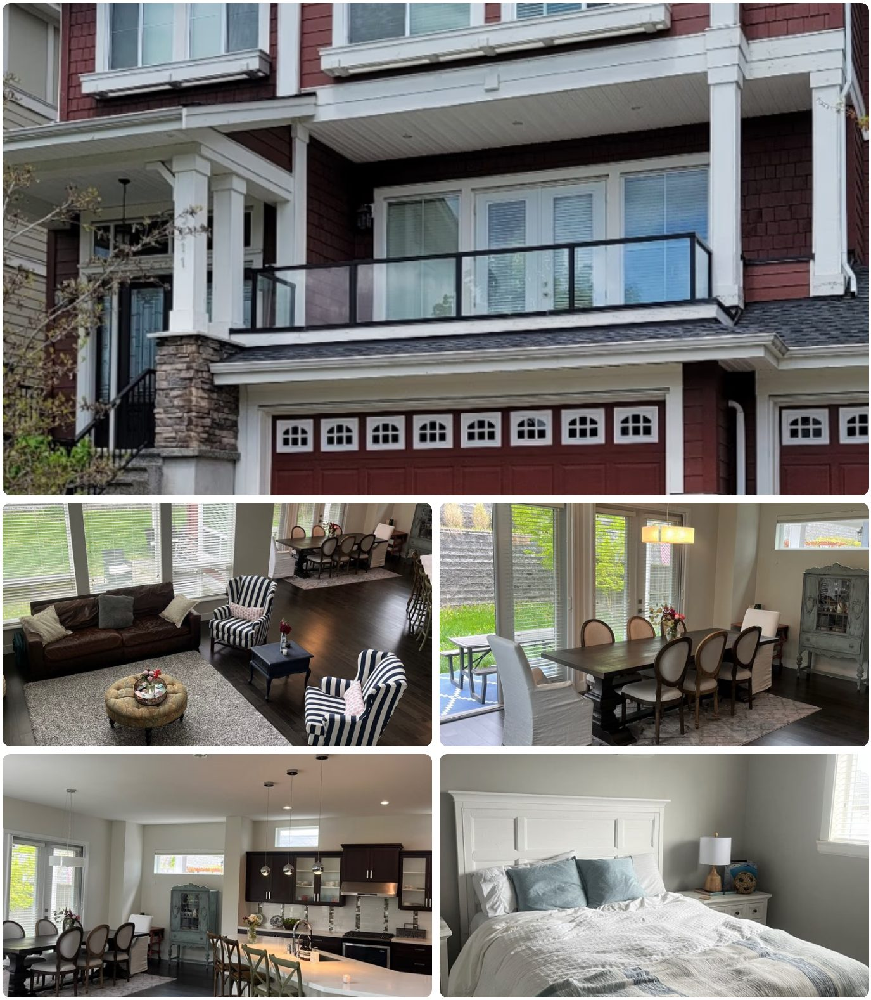

SUPERVISED PROGRAM
관리형 유학이란?
학교 밖 시간까지 연결하는 관리
학교 수업만으로 끝나는 일반 조기유학에 방과후 학습, 생활관리, 통학·숙소 지원과 진학 상담을 결합한 프로그램입니다. 제공 범위는 기숙사형과 홈스테이형, 지역별로 다릅니다.
👤 Grade 5~11
📚 방과후 학습 지원
🏠 기숙사 또는 홈스테이
💰 CA$58,500~80,700
위 비용 범위는 일반 관리형 6개 중 골프 특화 과정을 제외한 금액입니다. 주니어 골프 과정은 연 CA$101,700~108,400이며, 프로그램마다 포함·불포함 항목을 따로 확인해야 합니다.
ON SITE
학생들이 생활하는 관리형 기숙사숙소 형태와 관리 수준은 프로그램별 상세 페이지에서 확인하세요

WHAT IS SUPERVISED
관리형은 무엇을 더해주는 프로그램인가요?
📚
학업 관리
방과후 수업, 과제·시험 준비, 과목 선택과 내신·진학 상담을 프로그램별 범위에 맞춰 제공합니다.
🏠
생활 관리
기숙사 또는 홈스테이 생활, 식사·통학·생활 규칙과 보호자 보고를 연결합니다.
🛡️
현지 지원
초기 정착, 학교 소통, 가디언 및 응급 상황 지원을 현지 운영팀이 담당합니다.
💡 관리형이라고 모두 같은 것은 아닙니다. 기숙사형은 저녁 생활과 학습까지 관리 강도가 가장 높고, 홈스테이형은 현지 가정생활을 유지하면서 방과후 학업 지원을 받는 구조입니다.
SUPERVISED VS GUARDIAN
관리형과 가디언형의 핵심 차이
| 항목 | 관리형 | 가디언형 |
|---|
| 연간 비용 | CA$58,500~80,700
골프 제외 | CA$37,450~48,775 |
| 방과후 수업 | ◎ 주 4~5회 포함 | ✕ 없음·멘토링 별도 |
| 저녁 학습 | ◎ 기숙사형 매일 운영 | ✕ 없음 |
| 숙소 | 기숙사 또는 홈스테이 | 홈스테이 |
| 통학 지원 | 포함 또는 옵션
프로그램별 차이 | 일부 프로그램만 제공 |
| 적합한 학생 | 생활·학습에 지속적인 도움이 필요한 학생 | 스스로 공부하고 생활할 수 있는 학생 |
💡 선택 기준은 자기관리 수준입니다. 관리가 줄어도 스스로 성적과 생활을 유지할 수 있다면 가디언형이 비용 효율적입니다. 반대로 부모·학원의 지속적인 관리로 학습하던 학생은 관리형이 안전합니다.
FIT CHECK
이런 학생은 관리형을 먼저 검토하세요
관리형이 잘 맞는 경우
- 처음 혼자 해외생활을 시작하는 학생
- 학습 계획과 과제 관리에 도움이 필요한 학생
- 생활 리듬과 통학·식사 관리가 중요한 학생
- 캐나다 대학 입시까지 지속적인 상담이 필요한 학생
가디언형도 가능한 경우
- 학원 없이도 스스로 공부하는 학생
- 대중교통과 홈스테이 생활에 적응할 수 있는 학생
- 필요한 과목만 별도 과외로 보완하려는 학생
- 관리보다 비용 효율을 우선하는 가정
FAQ
관리형 유학에서 먼저 확인할 질문
Q1표시 비용에 모든 항목이 포함되나요?
아닙니다. 교육청·학교 등록비, 교복·교재, 개인 용돈, 일부 교통·액티비티, 여름방학 숙식 등은 프로그램에 따라 별도입니다. 같은 금액처럼 보여도 포함 범위가 다르므로 상세 페이지와 최종 견적을 함께 확인해야 합니다.
Q2기숙사와 홈스테이 관리형의 가장 큰 차이는 무엇인가요?
기숙사형은 저녁 시간과 생활 규칙까지 관리 강도가 높고, 홈스테이형은 현지 가정생활을 하면서 방과후 학업 지원을 받습니다. 저녁 자기관리가 어렵다면 기숙사형, 일상 영어와 가정생활을 중시한다면 홈스테이형을 우선 검토할 수 있습니다.
Q3관리형이면 성적 향상이 보장되나요?
보장되지는 않습니다. 관리형은 학습 계획, 수업과 상담 환경을 제공하지만 실제 성적은 학생의 출석, 과제 수행, 영어 수준과 과목 난이도에 따라 달라집니다. 관리 범위와 학생의 참여 의지를 함께 판단해야 합니다.
CONTACT
상담이 필요하신가요?
관리 수준부터 먼저 확인해 드립니다
학년 · 예산 · 자기관리 수준을 알려주시면 관리형과 가디언형을 함께 비교합니다.